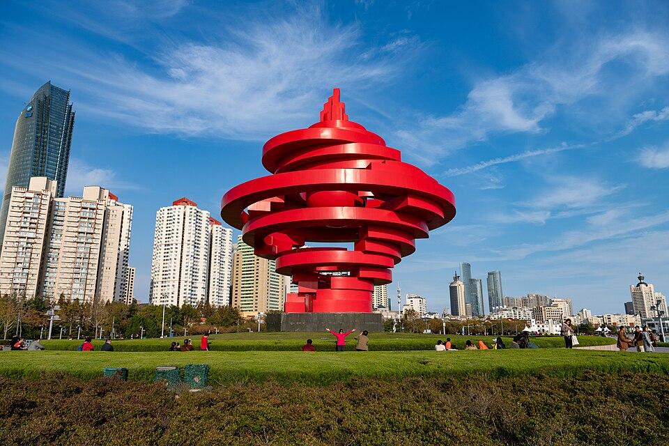
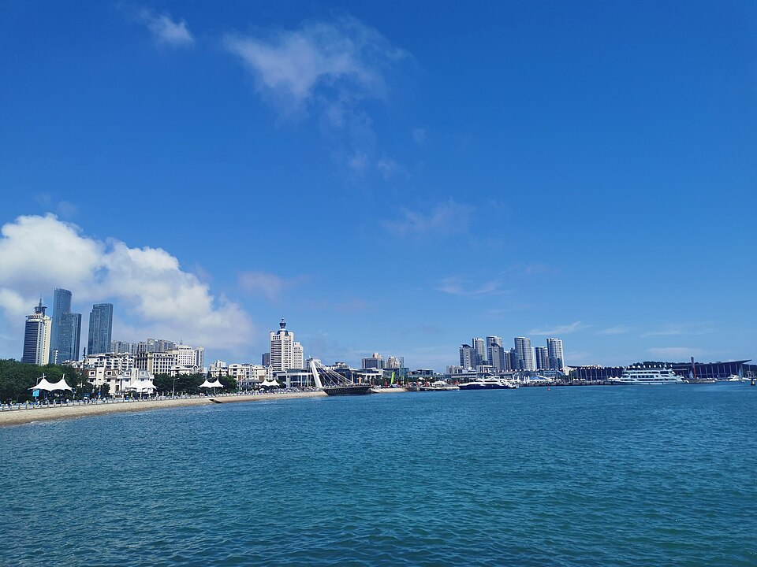
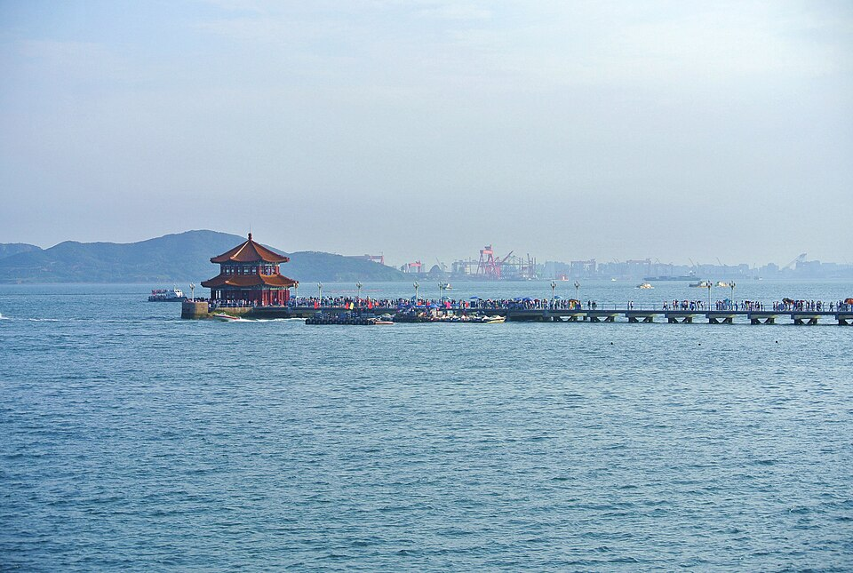
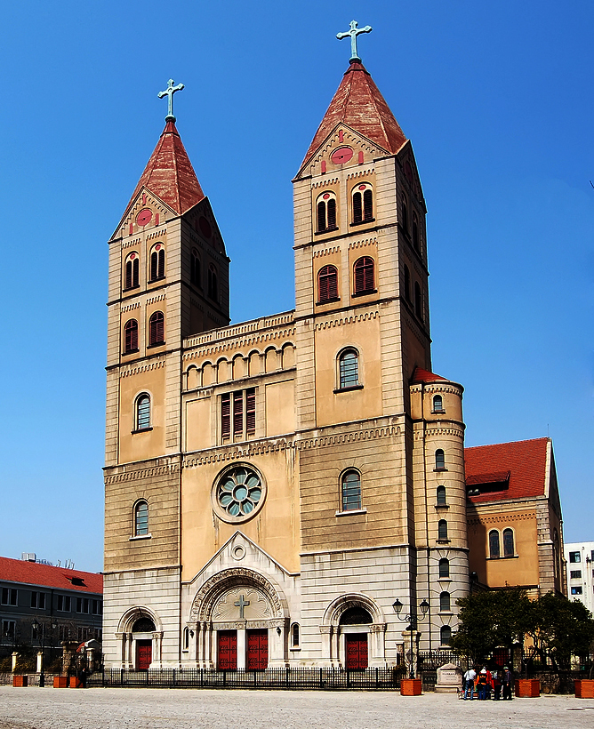
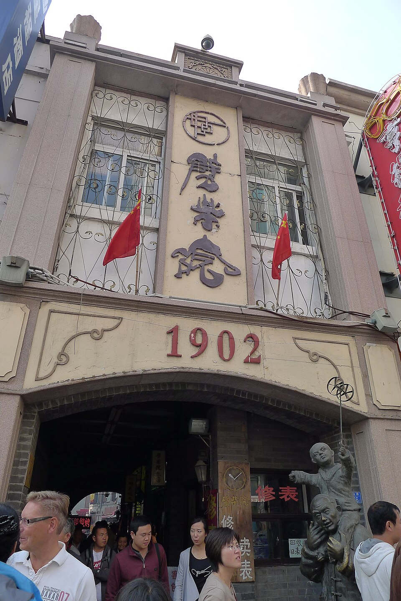
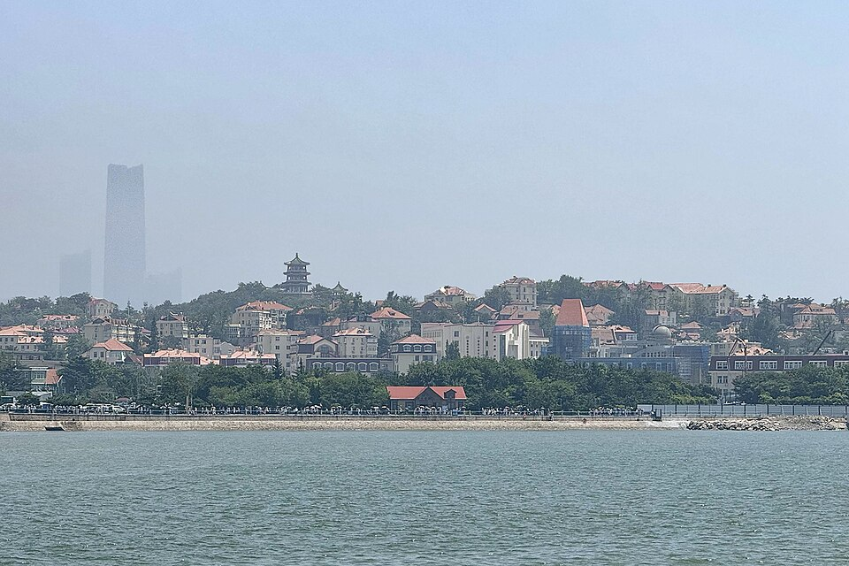
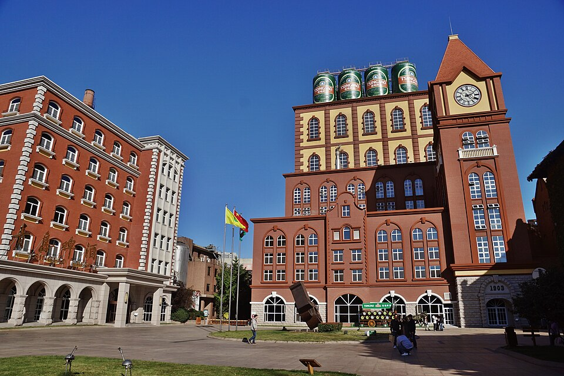
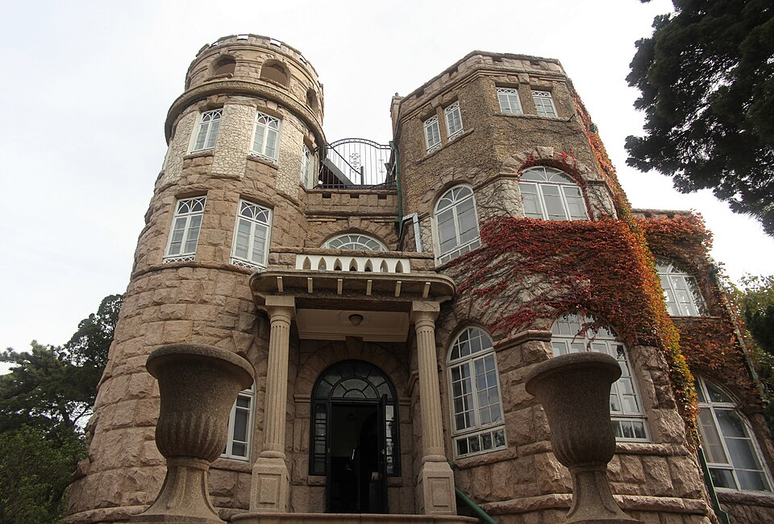

2027.04.23(금) ~ 04.25(일) · 인천 ⇄ 칭다오 자오둥
항공 시간, 날씨, 현지 사정에 따라 순서가 바뀔 수 있어요. 시간은 모두 현지 시간(한국보다 1시간 느림) 기준입니다.

14:305.4 광장 五四广场칭다오 상징인 붉은 횃불 조형물 '오월의 바람' 앞 단체사진
15:30칭다오 올림픽 요트경기장 奥帆中心2008 베이징 올림픽 요트 경기장. 해안 산책로 따라 걷기
칭다오 대표 생선만두 체인. 시내에 분점이 많아 호텔에서 가까운 곳으로
가게 앞 수조에서 해산물을 고르면 원하는 방식으로 조리. 주문 전 무게(斤, 500g)당 가격 확인

09:00잔교 栈桥바다 위로 440m 뻗은 다리와 회란각. 칭다오 맥주 라벨 속 그 풍경
10:00천주교당 (성 미카엘 성당) 天主教堂1934년 고딕 성당. 성당 앞 광장이 사진 명소
11:30피차이위엔 · 점심 劈柴院100년 넘은 먹자골목. 꼬치, 해물 튀김 등 길거리 음식으로 점심
13:30소어산 공원 小鱼山公园정상 남조각에서 빨간 지붕 구시가지와 바다를 한눈에. 입장료 약 10위안
15:00칭다오 맥주박물관 青岛啤酒博物馆1903년 공장 건물. 입장권에 원액 생맥주·흑맥주 시음 포함 (약 60위안, 사전 예매 권장)
1891년 문을 연 노포. 중산로에 있어 피차이위엔과 걸어서 가까워요
조금씩 사서 나눠 먹기 좋아요
입장권에 시음이 포함돼 있어요
박물관 바로 앞 거리. 가게마다 직접 뽑은 생맥주를 팔아요

09:00팔대관 풍경구 八大关유럽풍 별장이 모인 거리. 4월 말이면 벚꽃·해당화 시즌 끝자락
현지인이 줄 서는 구시가지 꼬치집. 대학로 구경 후 지모루 시장 가기 전에 들르기
맥주는 수하물 무게와 면세 한도를 확인하고 사기
바다 앞이라 야경과 산책이 편하고, 구시가지·맥주거리까지 택시 15~20분. 2박 동일 숙소 권장.
잔교, 천주교당, 피차이위엔이 도보권. 공항까지는 조금 더 멀어요.
붉은 횃불 조형물과 해변 광장. 밤에는 빌딩 조명 쇼.
요트가 늘어선 마리나와 해안 산책로.
칭다오 맥주 라벨 속 그 다리와 회란각.
쌍탑 고딕 성당. 웨딩 촬영 명소.
100년 넘은 먹자골목. 꼬치와 해물 튀김으로 점심.
구시가지 빨간 지붕과 바다를 내려다보는 전망 포인트.
120년 역사 양조장. 갓 뽑은 원액 맥주 시음.
유럽풍 별장 거리. 4월엔 꽃길 산책.
기념품·잡화 시장. 흥정은 기본.
사진: Wikimedia Commons (CC 라이선스, 각 원저작자)
| 입국 | 한국 여권 무비자 입국 정책이 연장되어 왔지만 기한이 있는 조치예요. 출발 전 주중 한국대사관 공지로 꼭 확인하세요. |
|---|---|
| 시차 | 한국보다 1시간 느림 (한국 12시 = 칭다오 11시) |
| 날씨 | 4월 말 약 10~18°C. 바닷바람이 차서 얇은 겉옷 필수 |
| 결제 | 알리페이/위챗페이에 한국 카드 연결해 가기. 현금(위안)은 비상용 소액만 |
| 인터넷 | 카카오톡·구글·인스타그램 접속 제한. 로밍 또는 해외 eSIM 이용 권장 |
| 교통 | 디디(DiDi) 앱을 미리 설치. 목적지는 중국어 이름으로 보여주기 |
| 전압 | 220V, 한국 플러그 대부분 사용 가능 (멀티 어댑터 있으면 편함) |
| 항목 | 기준 | 아끼면 | 여유롭게 |
|---|---|---|---|
| 1인 합계 | |||
| 일행 전체 | |||